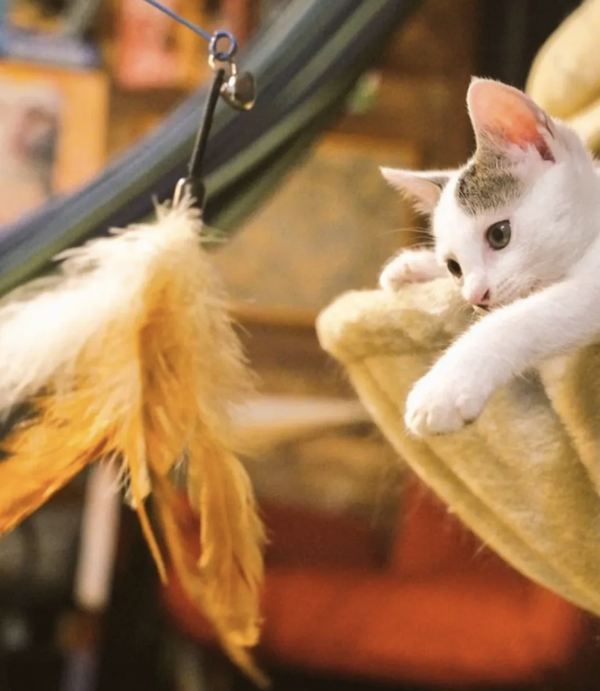
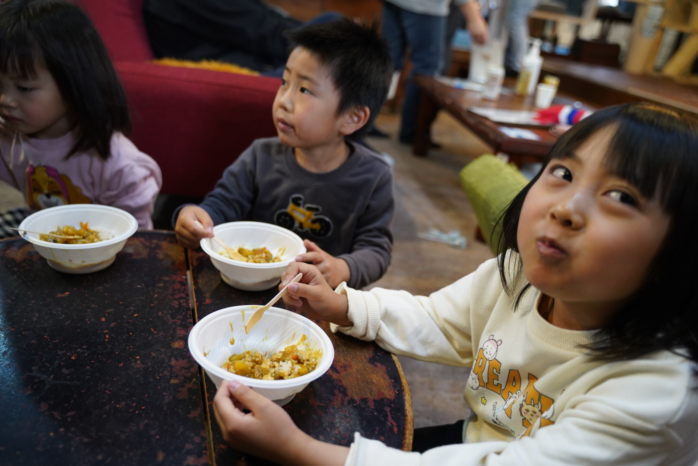
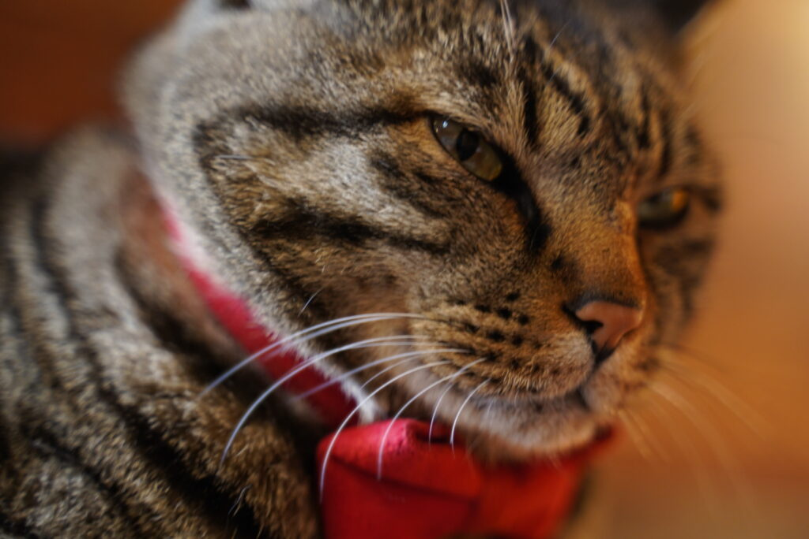
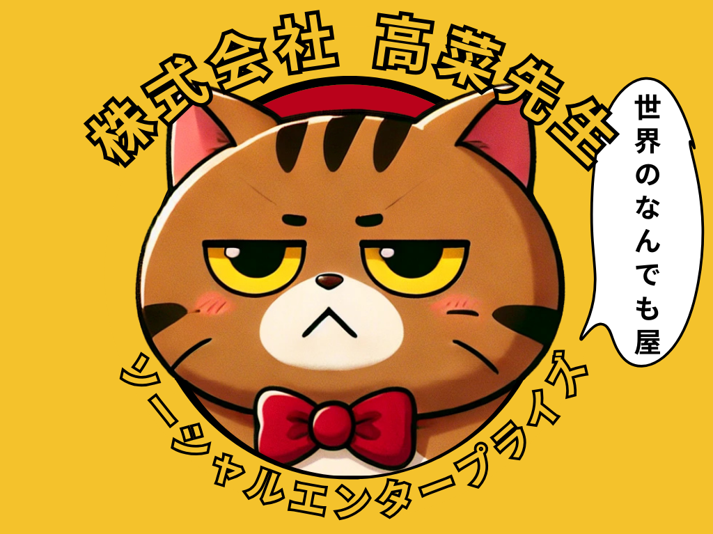
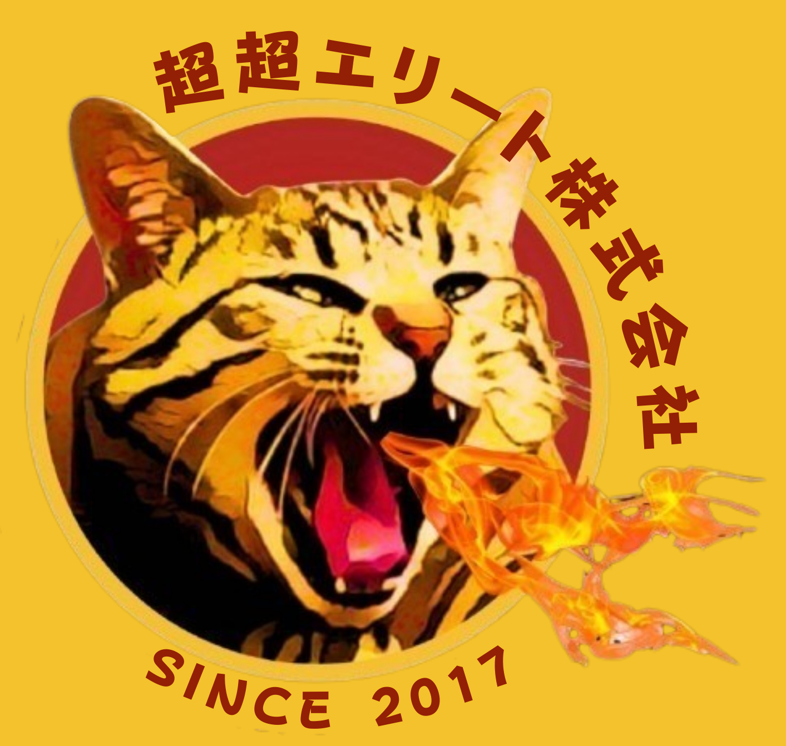
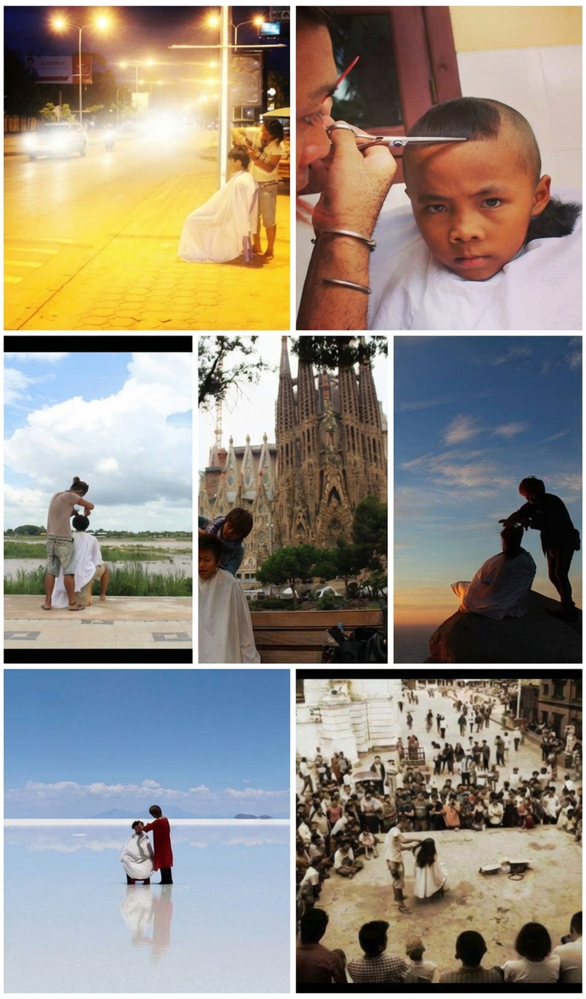
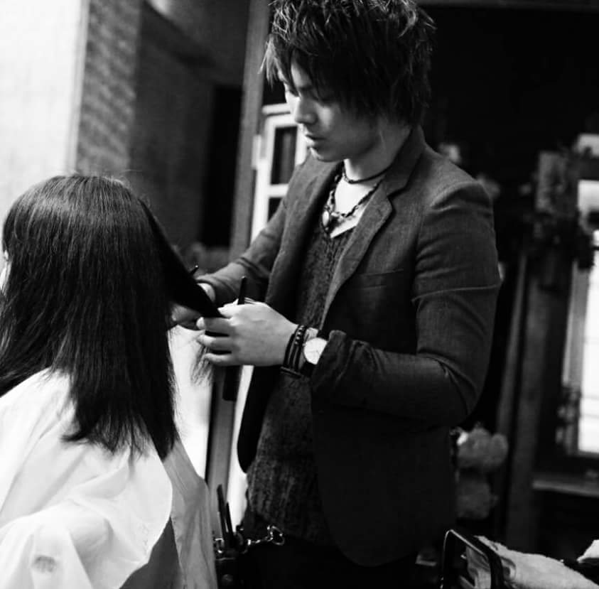
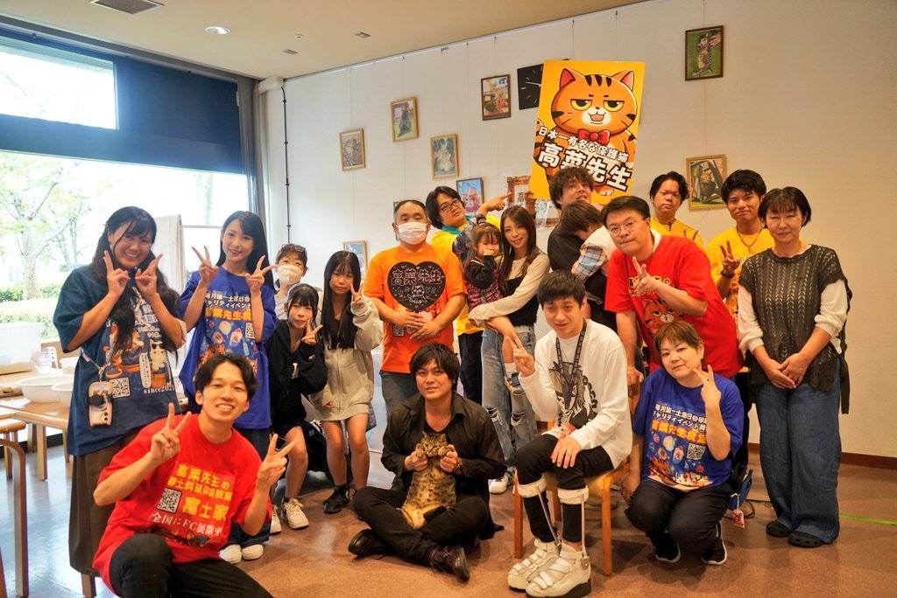

全部つなげて、社会をよくする
- 猫の命、子どもの未来、地域の文化
- できる人とできない人
- 支援したい人とされたい人
- 居場所がない人と場所を持つ人
すべてをつなげて
楽しく守れる社会へ

私たちは【高菜先生革命プロジェクト】を通じて、支援が必要な人々と「何かできることをしたい」という想いをもつ支援者とをつなぎ、様々な社会問題に取り組む企業です。
ちょっとイイコトをして保護猫の高菜先生をシンボルとして有名にし、世界をちょっとだけよくすることが企業の目的です。

目指す未来
すべてをつなげて
楽しく守れる社会へ

私たちのやること
ネガティブだからこそエンタメを大切にする。
楽しく社会貢献できる仕組みを作ります。
ヒト、モノ、コト、ネコ、社会、未来、居場所。
全部つなげてなんとかするコミュニティを作ります。
高菜先生を世界的マスコットキャラクターにし、社会問題に興味を持つ人を増やします。

大事にしていること
Community, Action, New, Bridge, Entertainmentの頭文字をとり、Can beをテーマに行動していきます。

| 会社名 | 株式会社高菜先生ソーシャルエンタープライズ |
|---|---|
| 設立 | 2023年 |
| 本社所在地 | 東京都中央区銀座1-22-11 銀座大竹ビジデンス2階 |
| 代表者 | 桑原 淳 |
| 主な事業 | 社会貢献事業 |
| ブランド | 高菜先生革命プロジェクト |
| 拠点展開 | 全国各地・ラオスなど |
| 主な取り組み | 支援できる人と支援が必要な人のマッチング |

| 会社名 | 超超エリート株式会社 |
|---|---|
| 設立 | 2017年 |
| 本社所在地 | 山梨県富士吉田市大明見5-20-10 |
| 代表者 | 桑原 淳 |
| 主な事業 | 観光事業・飲食事業・食品製造事業・WEBコンサル事業 |
| ブランド | 高菜先生食堂・激辛高菜先生・高菜先生の体験教室富士家・インディゴ高菜先生など |
| 拠点展開 | 山梨県甲府市・富士吉田市・河口湖 |
| 主な取り組み | 保護猫施設運営・障がい者支援・子ども食堂 |
ハサミ一本で世界を巡り、見えた景色。
「ギブの精神」で孤独のない社会をつくる。
世界62ヶ国1301人をカットした旅人美容師。帰国後は東京で美容室を開業し、現在は地元山梨を拠点に飲食事業や観光事業を展開。「貧困や生きづらさの原因は孤独にある」という考えのもと、事業を通じて支え合えるコミュニティづくりに挑み続けています。
山梨県富士吉田市生まれ。都内で美容師として活動後、人生を見つめ直すため退職。22歳で日本縦断と1000人握手の旅を完遂しました。その後「世界中で1000人カットする」という目標を掲げ海外へ。62ヶ国を巡り、1301人のヘアカットを行い書籍化もされました。

帰国後、資金ゼロの状態から高円寺に美容室「Up to You」を開業。その後山梨での起業に挑戦しますが、コロナ禍による閉業や資金難など、経営者として幾度もの苦難を経験しました。それらを乗り越え、現在は飲食事業や調味料ブランドなどを多角的に展開しています。

現在は自身の経験から「孤独の解消」をテーマに活動。子どもの職業体験「キッズアカデミー」や子ども食堂の運営に注力しています。子どもたちへの体験機会の提供はもちろん、そこから生まれる親同士の繋がりを大切にし、地域全体で支え合う社会貢献事業を推進しています。

瀕死だった保護猫が、社会を変える象徴に。
多岐にわたるブランドの顔として活躍。
瀕死の状態から奇跡的に回復し、現在は「高菜先生」ブランドの顔として活躍中。自身の名を冠した激辛調味料や店舗の看板を背負い、その売上の一部は保護猫活動などの社会貢献に充てられています。存在そのものが社会を変えるきっかけを作る、わがままボディな猫。
宮崎県延岡市のスーパー裏で衰弱していたところを保護。高菜漬けの桶に入れられて病院へ運ばれたことから「高菜」と命名されました。その後山梨へ移住。回復後には車中泊での九州一周3000kmの旅にも同行するなど、驚異的な生命力と適応力を持っています。

現在は「代表取締役猫」として、飲食やアパレルなど様々な事業の公式キャラクターを務めています。高菜先生の知名度が上がることで保護猫活動への関心が高まり、収益が社会課題の解決に還元される仕組みを作っています。

普段は「アトリエ高菜先生」にて、看板猫としてお客様を迎えています。お昼寝をしながら訪れる人々に癒やしと笑顔を提供し、人と猫、人と人を繋ぐ架け橋として活躍しています。

| 住所 | 〒401-0301 山梨県南都留郡富士河口湖町船津3250-3 |
|---|---|
| 駐車場 | 無料駐車場有 |
| 予約 | 不要 （ほぼ年中無休で営業しておりますが、確実にご利用になりたいという方は事前のお問い合わせをお願い致します。） |
| 営業時間 | AM 11:00~17:00 |
| 定休日 | 不定休 |
| 催行人数 | 1名〜 |
| 最寄駅 | 富士急行線河口湖駅（徒歩12分） |